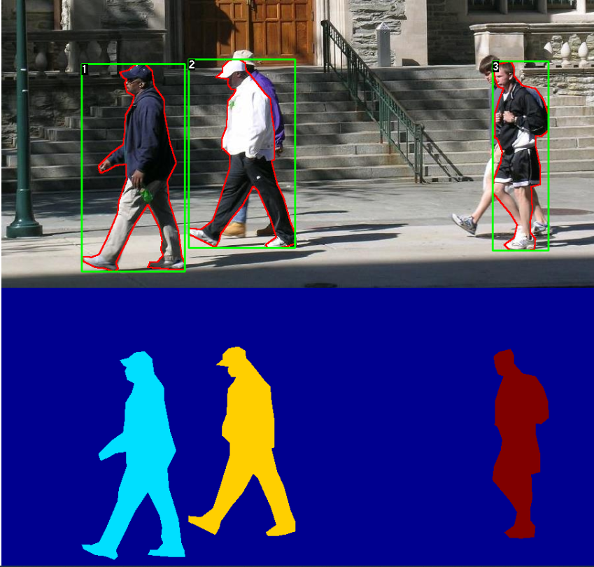
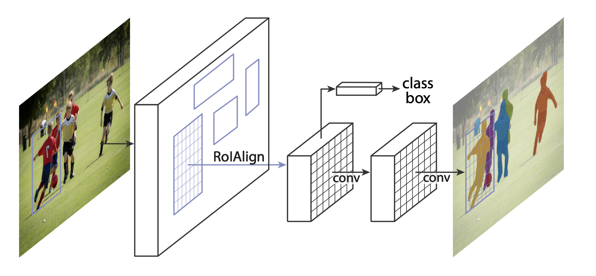

微调
内容
微调¶
参考：TorchVision Object Detection Finetuning Tutorial
在 Penn-Fudan 数据库 中对行人检测和分割预训练的 Mask R-CNN 模型进行微调。它包含 170 个图像 345 个实例的行人，使用它来说明如何在 torchvision 中使用新的特征，以训练一个自定义数据集上的实例分割模型。
定义数据集¶
用于训练对象检测、实例分割和人员关键点检测的参考脚本允许轻松地支持添加新的自定义数据集。数据集应该继承标准的 torch.utils.data.Dataset 类，并实现 __len__ 和 __getitem__。
唯一需要的指定的是数据集 __getitem__ 应该返回：
image：PIL 图片尺寸
(H, W)target：一个包含以下字段的字典。
boxes(FloatTensor[N, 4])：N个边界框的坐标为[x0, y0, x1, y1]格式，取值范围为 \([0, W) \times [0, H)\)。labels(Int64Tensor[N])：每个边界框的标签。0表示始终是背景类。image_id(Int64Tensor[1])：一个图像标识符。它应该在数据集中的所有图像之间是唯一的，并在评估期间使用。area(Tensor[N])：边界框的面积。这是在使用 COCO 度量进行评估时使用的，用于分隔小、中、大盒子之间的度量分数。iscrowd(UInt8Tensor[N]):iscrowd=True的实例在计算时会被忽略。（可选）
mask(UInt8Tensor[N, H, W]):每个对象的分割掩码。（可选）
keypoints(FloatTensor[N, K, 3]):对于N个对象中的每一个，它包含了[x, y, visibility]格式的K个关键点，定义了对象。visibility=0表示关键点不可见。注意，对于数据扩展，翻转关键点的概念取决于数据表示，您可能应该为新的关键点表示调整references/detection/transforms.py。
如果您的模型返回上述方法，它们将使其同时适用于训练和评估，并将使用来自 pycocotools 的评估脚本，这些脚本可以与 pip 安装 pycocotools 一起安装。
备注
对于 Windows，请使用命令从 gautamchitnis 安装 pycocotools：
pip install git+https://github.com/gautamchitnis/cocoapi.git@cocodataset-master#subdirectory=PythonAPI
labels上有一个注意事项。模型将第 0 类作为背景。如果数据集不包含背景类，则标签中不应该有 0。例如，假设您只有两个类，cat 和 dog，您可以定义 1（不是 0）表示猫，2 表示狗。所以，例如，如果一个图像同时具有两个类，你的标签张量应该看起来像 [1, 2]。
此外，如果想在训练期间使用高宽比分组（以便每批只包含具有相似高宽比的图像），那么建议也实现一个 get_height_and_width 方法，它返回图像的高度和宽度。如果没有提供此方法，可以通过 __getitem__ 查询数据集的所有元素，它将在内存中加载图像，比提供自定义方法要慢。
为 PennFudan 编写自定义数据集¶
下载并解压 zip 文件 后，有以下文件夹结构：
PennFudanPed/
PedMasks/
FudanPed00001_mask.png
FudanPed00002_mask.png
FudanPed00003_mask.png
FudanPed00004_mask.png
...
PNGImages/
FudanPed00001.png
FudanPed00002.png
FudanPed00003.png
FudanPed00004.png
这是一对图像和分割蒙版的一个例子：

所以每个图像都有一个对应的分割蒙版，其中每个颜色对应一个不同的实例。为这个数据集编写一个 torch.utils.data.Dataset 类。
import os
import numpy as np
import torch
from PIL import Image
class PennFudanDataset(torch.utils.data.Dataset):
def __init__(self, root, transforms):
self.root = root
self.transforms = transforms
# load all image files, sorting them to
# ensure that they are aligned
self.imgs = list(sorted(os.listdir(os.path.join(root, "PNGImages"))))
self.masks = list(sorted(os.listdir(os.path.join(root, "PedMasks"))))
def __getitem__(self, idx):
# load images and masks
img_path = os.path.join(self.root, "PNGImages", self.imgs[idx])
mask_path = os.path.join(self.root, "PedMasks", self.masks[idx])
img = Image.open(img_path).convert("RGB")
# note that we haven't converted the mask to RGB,
# because each color corresponds to a different instance
# with 0 being background
mask = Image.open(mask_path)
# convert the PIL Image into a numpy array
mask = np.array(mask)
# instances are encoded as different colors
obj_ids = np.unique(mask)
# first id is the background, so remove it
obj_ids = obj_ids[1:]
# split the color-encoded mask into a set
# of binary masks
masks = mask == obj_ids[:, None, None]
# get bounding box coordinates for each mask
num_objs = len(obj_ids)
boxes = []
for i in range(num_objs):
pos = np.where(masks[i])
xmin = np.min(pos[1])
xmax = np.max(pos[1])
ymin = np.min(pos[0])
ymax = np.max(pos[0])
boxes.append([xmin, ymin, xmax, ymax])
# convert everything into a torch.Tensor
boxes = torch.as_tensor(boxes, dtype=torch.float32)
# there is only one class
labels = torch.ones((num_objs,), dtype=torch.int64)
masks = torch.as_tensor(masks, dtype=torch.uint8)
image_id = torch.tensor([idx])
area = (boxes[:, 3] - boxes[:, 1]) * (boxes[:, 2] - boxes[:, 0])
# suppose all instances are not crowd
iscrowd = torch.zeros((num_objs,), dtype=torch.int64)
target = {}
target["boxes"] = boxes
target["labels"] = labels
target["masks"] = masks
target["image_id"] = image_id
target["area"] = area
target["iscrowd"] = iscrowd
if self.transforms is not None:
img, target = self.transforms(img, target)
return img, target
def __len__(self):
return len(self.imgs)
这就是数据集的全部内容。现在，定义一个可以对这个数据集执行预测的模型。
定义模型¶
使用 Mask R-CNN，它是基于 Faster R-CNN 的。Faster R-CNN 是一种模型，可以预测图像中潜在物体的边界框和类分数。

Mask R-CNN 增加了一个额外的分支到 Faster R-CNN，它也预测每个实例的分割掩码。

有两种常见的情况，人们可能想要修改 torchvision modelzoo 中的一个可用模型。第一个是当我们想从一个预先训练的模型开始，只是微调最后一层。另一种是当我们想要用一个不同的模型替换模型的主干时（例如，为了更快的预测）。
让我们看看在接下来的部分中我们将如何完成这两个步骤。
1. 从预先训练的模型进行微调¶
让我们假设您希望从一个经过 COCO 训练的模型开始，并希望针对特定的类对其进行微调。下面是一种可能的方法：
import torchvision
from torchvision.models.detection.faster_rcnn import FastRCNNPredictor
# load a model pre-trained pre-trained on COCO
model = torchvision.models.detection.fasterrcnn_resnet50_fpn(pretrained=True)
# replace the classifier with a new one, that has
# num_classes which is user-defined
num_classes = 2 # 1 class (person) + background
# get number of input features for the classifier
in_features = model.roi_heads.box_predictor.cls_score.in_features
# replace the pre-trained head with a new one
model.roi_heads.box_predictor = FastRCNNPredictor(in_features, num_classes)
2 修改模型，以添加不同的骨干¶
import torchvision
from torchvision.models.detection import FasterRCNN
from torchvision.models.detection.rpn import AnchorGenerator
# load a pre-trained model for classification and return
# only the features
backbone = torchvision.models.mobilenet_v2(pretrained=True).features
# FasterRCNN needs to know the number of
# output channels in a backbone. For mobilenet_v2, it's 1280
# so we need to add it here
backbone.out_channels = 1280
# let's make the RPN generate 5 x 3 anchors per spatial
# location, with 5 different sizes and 3 different aspect
# ratios. We have a Tuple[Tuple[int]] because each feature
# map could potentially have different sizes and
# aspect ratios
anchor_generator = AnchorGenerator(sizes=((32, 64, 128, 256, 512),),
aspect_ratios=((0.5, 1.0, 2.0),))
# let's define what are the feature maps that we will
# use to perform the region of interest cropping, as well as
# the size of the crop after rescaling.
# if your backbone returns a Tensor, featmap_names is expected to
# be [0]. More generally, the backbone should return an
# OrderedDict[Tensor], and in featmap_names you can choose which
# feature maps to use.
roi_pooler = torchvision.ops.MultiScaleRoIAlign(featmap_names=['0'],
output_size=7,
sampling_ratio=2)
# put the pieces together inside a FasterRCNN model
model = FasterRCNN(backbone,
num_classes=2,
rpn_anchor_generator=anchor_generator,
box_roi_pool=roi_pooler)
基于 PennFudan 数据集的实例分割模型¶
在我们的例子中，我们希望从一个预先训练的模型进行微调，因为我们的数据集非常小，所以我们将采用第1种方法。
这里我们还想计算实例分割掩码，所以我们将使用 Mask R-CNN：
import torchvision
from torchvision.models.detection.faster_rcnn import FastRCNNPredictor
from torchvision.models.detection.mask_rcnn import MaskRCNNPredictor
def get_model_instance_segmentation(num_classes):
# load an instance segmentation model pre-trained pre-trained on COCO
model = torchvision.models.detection.maskrcnn_resnet50_fpn(pretrained=True)
# get number of input features for the classifier
in_features = model.roi_heads.box_predictor.cls_score.in_features
# replace the pre-trained head with a new one
model.roi_heads.box_predictor = FastRCNNPredictor(in_features, num_classes)
# now get the number of input features for the mask classifier
in_features_mask = model.roi_heads.mask_predictor.conv5_mask.in_channels
hidden_layer = 256
# and replace the mask predictor with a new one
model.roi_heads.mask_predictor = MaskRCNNPredictor(in_features_mask,
hidden_layer,
num_classes)
return model
就是这样，这将使模型准备好训练和评估您的自定义数据集。
把每个组件组合在一起¶
在 references/detection/ 中，有许多辅助函数来简化训练和评估检测模型。这里，我们将使用 references/detection/engine.py、 references/detection/utils.py 和 references/detection/transforms.py。只需要将 references/detection 下的所有内容复制到你的文件夹中，并在这里使用它们。
让我们编写一些辅助函数用于数据增强/转换：
待更.....